Projekt Hands-On Universe Zrozumienie rotacji Drogi Mlecznej przez obserwacje radioastronomiczne
Uwaga W celu wykorzystania pełnych możliwości strony, zalecamy czytanie na komputerze!
Aby zrozumieć wykonywane przez nas obserwację musieliśmy przejść odpowiedni wstęp teoretyczny. Naszym zadanie była obserwacja Drogi Mlecznej z użyciem radioteleskopu. Głównym problemem jaki stoi na drodze prowadzenia takich obserwacji jest fakt, iż znajdujemy się w środku obiektu naszych zainteresowań. Tak więc poruszamy się razem z obserwowanym obiektem.
Zjawiskiem, które znane nam było już z lekcji fizyki w szkole i które pogłębiliśmy dzięki udziale w projekcie, było przesunięcie dopplerowskie - obserwowana długość fali światła jest przesunięta z powodu względnego ruchu pomiędzy nami, a źródłem promieniowania.
Najważniejszy wniosek to ten, że gdy obiekt względnie się od nas oddala to fale są przesunięte ku czerwieni - w stronę fal dłuższych, a kiedy się zbliża ku fioletowi - w kierunku krótszych.
Następnie w celu zrozumienia kinematyki Drogi Mlecznej, obserwowaliśmy doświadczenie z użyciem rozciągliwej nitki, rozpiętej pomiędzy obserwatorem, a źródłem promieniowania. Kiedy podczas rotacji Galaktyki linka naciąga się, to wiemy, że odległość między źródłem i obserwatorem rośnie, a to oznacza przesunięcie ku czerwieni. Jeśli linka staje się luźna (opada), wtedy wiadomo, że odległość między źródłem i obserwatorem zmniejsza się, co wskazuje przesunięcie ku fioletowi. Powyżej opisaną inscenizację widać na filmie poniżej:
http://www.euhou.net/docupload/videos/MW-alexander_rudolph.mp4 Analizując doświadczenie doszliśmy do wniosku, że naszą galaktykę możemy podzielić na poniższe kwadranty:
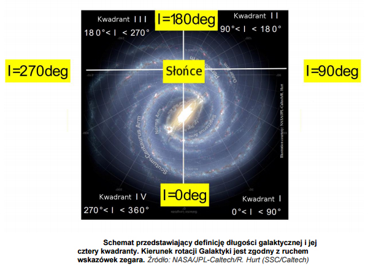
Jak było wspomniane w ćwiczeniu w zależności od położenia w tym układzie ustalamy znak przesunięcia dopplerowskiego. Powód takich działań wynika z matematycznego zrozumienia prędkości radialnej. Po pierwsze ruch który obserwujemy, jest względnym ruchem obiektu wzdłuż naszej linii widzenia. Znalezienie wartości takiego ruchu polega na tym, aby zrzutować wektorowo zaznaczoną prędkość Słońca wokół Galaktyki, oraz prędkość obłoku gazu, na nasz kierunek widzania, a następnie wyznaczyć ich różnicę.
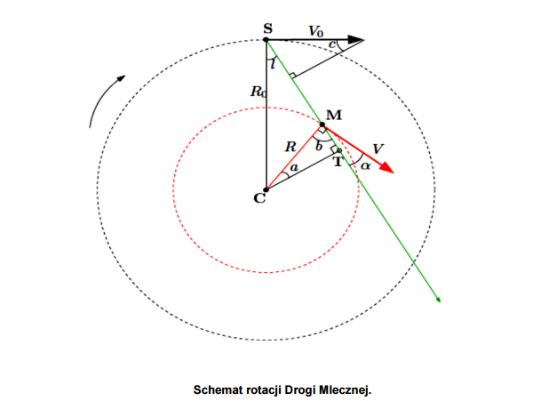
Po matematycznych przekształceniach otrzymaliśmy wzór:
Gdzie:
V0 - Prędkość Słońca wokół centrum Galaktyki (= 220 km/s)
R0 - Odległość Słońca od centrum Galaktyki (= 8.5 kpc; 1 pc = 3.09 x 1016 m)
l - Długość galaktyczna
V - Prędkość obłoku gazu
R - Odległość obłoku od centrum Galaktyki, inaczej promień galaktocentryczny
Naszym następnym krokiem było skupienie się na wyznaczaniu krzywej rotacji Galaktyki, czyli na wykresie V od R. Ustaliliśmy, że wartości vrbędą największe, kiedy R będzie najmniejsze, pod warunkiem, że V jest stałe lub rośnie jednostajnie z R, a to ma miejsce. Dlatego też, jeśli obserwujemy wzdłuż danej linii widzenia, jakiś szereg obiektów, to ten który znajduje się w najmniejszej odległości od środka Galaktyki (R), będzie miał największą prędkość vr. Wiemy więc, jak znaleźć vr,zostaje nam jeszcze R, czyli odległość obłoku od centrum Galaktyki. Zauważamy, w tak zwanym punkcie stycznym - punkt w którym cały wektor prędkości obłoku leży na linii widzenia i jego kierunek jest styczny do tej linii, promień tworzy kąt prosty z kierunkiem widzenia, wiemy więc, że Rmin=R0 sin(l). Podstawiając to do równania na vr otrzymujemy dużo prostszy wzór, z którego będziemy korzystać później w naszym arkuszu kalkulacyjnym:
Obserwacje:
Obserwacje prowadziliśmy zdalnie za pomocą radioteleskopu w Paryżu o średnicy czaszy równej 2 metry. Używaliśmy do tego strony internetowej projektu:
http://euhou.obspm.fr/public/index.php
Niestety podczas naszych obserwacji, z powodu awarii, niedostępny był teleskop znajdujący się w Krakowie, co uniemożliwiło używanie najbliższego nam radioteleskopu, dodatkowo o większej średnicy. Jednak na paryskim teleskopie byliśmy w stanie przeprowadzić potrzebne obserwacje.
Przygotowując się do działań sporządziliśmy odpowiednią tabelę.
Aby sprawdzić czy wszystko działa i jak wyglądają pomiary, na stronie jest aktywny symulator, który okazał się być niezwykle pomocny w naszej pracy.
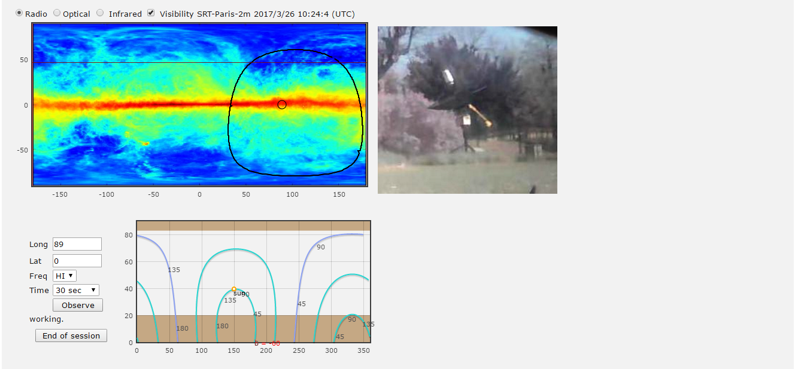
Powyższy rysunek przedstawia panel którym sterowaliśmy, mając zarezerwowany czas przy teleskopie.
Lewy górny róg ekranu pokazuje mapę we współrzędnych galaktycznych emisji wodoru neutralnego na fali 21 cm pochodzącą z przeglądu Leiden/Argentine/Bonn (LAB) Galactic HI Survey (Kalberla, P.M.W. i inni. 2005). Kolory reprezentują intensywność promieniowania: czerwony to największa intensywność, kolor niebieski – najmniejsza.
Obok znajduję się kamerka pokazująca na żywo co dzieje się we francuskim obserwatorium. Po kliknięciu w interesujące nas miejsce, wyświetlały się jego współrzędne. W tym momencie do naszego arkusza wstawiliśmy pierwszą pozycję czyli l. Po naciśnięciu przycisku “Observe”, teleskop nakierował się na wybrane przez nas miejsce, co było widoczne na kamerce i wykonywał obserwacje. Po zakończeniu jego pracy dostawaliśmy wyniki widoczne w zakładce “Results”.
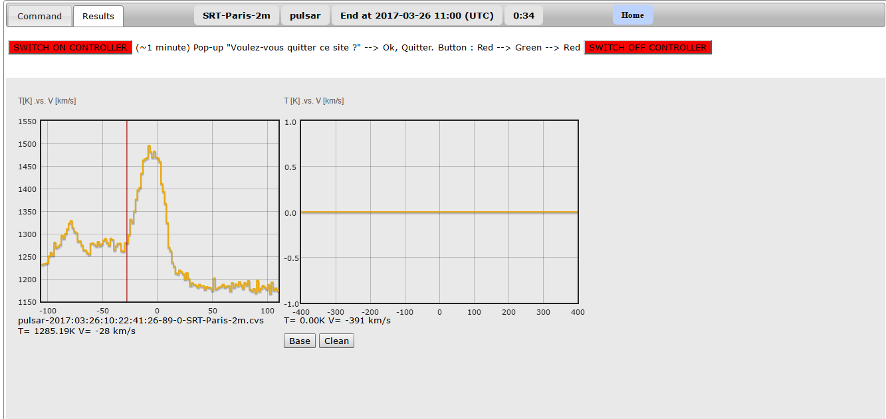
Na tym wykresie mieliśmy przedstawioną temperaturę i prędkość miejsca w którym umieścimy kursor. Przesuwając kursor na pik z największą prędkością - czyli najdalszy z prawej strony wykresu otrzymaliśmy wartość V. Zapisujemy ją do naszej tabeli. W ten sposób wykonaliśmy kolejne pomiary i zapisywaliśmy je do arkusza kalkulacyjnego.
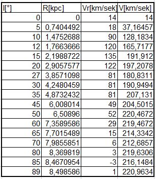
Z uzyskanych danych utworzyliśmy odpowiedni wykres. Niestety natrafiliśmy na problem, minimalna wartość l na którą udało nam się trafić podczas obserwacji to 27 stopni. Wynikało to z położenia geograficznego teleskopu i pory roku w której wykonywaliśmy obserwacje. Jednak tutaj z pomocą przyszedł symulator dostępny na stronie. Dzięki niemu uzupełniliśmy tabelkę o brakujące wyniki i otrzymaliśmy krzywą rotacji Drogi Mlecznej! Obok dla porównania wyniki profesjonalnych pomiarów.
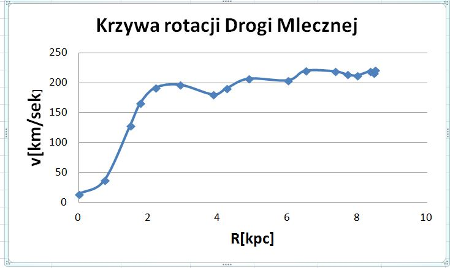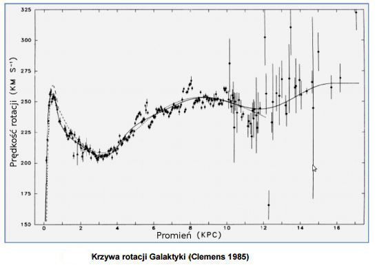
Masa Drogi Mlecznej
Wyznaczona przez nas krzywa może służyć do określania masy Naszej Galaktyki. Do tych obliczeń, będziemy upraszczająco zakładać, że galaktyka jest sferycznie symetryczna. Podczas gdy gwiazdy (i obłoki gazu) galaktyk spiralnych są w rzeczywistości rozmieszczone w postaci spłaszczonego dysku, to przybliżenie jest do przyjęcia z dwóch powodów:
Różnica pomiędzy wynikiem dla rozkładu sferycznego i spłaszczonego dysku jest jedynie kilkukrotna, więc oszacowanie będzie dokładne, co do rzędu wielkości.
Co ważniejsze, wkrótce zobaczymy, że większość masy w Drodze Mlecznej rozmieszczona jest w postaci sferycznie symetrycznego halo ciemnej materii, czyli niewidocznej masy, która wpływa na dynamikę (i w związku z tym kinematykę) Galaktyki.
Wyobraźmy sobie przykładowe ciało znajdujące się w naszej Galaktyce, ma ono masę m, a jej promień galaktyczny wynosi R. Prawo grawitacji Newtona twierdzi, że siła grawitacyjna działająca na ten obiekt wynosi
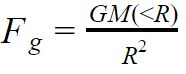
gdzie M(<R) jest całkowitą masą wewnątrz promienia R, a G to stała grawitacji Newtona. Wykonując proste przyrównanie do siły dośrodkowej otrzymamy wzór na M(<R):
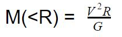
Tak więc, dokonując pomiaru V dla danego R, możemy znaleźć masę wewnątrz Galaktyki do tego punktu. Jasno z tego widać, że im dalej od środka będziemy mierzyć prędkości obiektów, tym lepsze będą nasze oszacowania całkowitej masy Galaktyki. Tak więc wykonaliśmy te czynności i otrzymaliśmy podane poniżej wyniki.
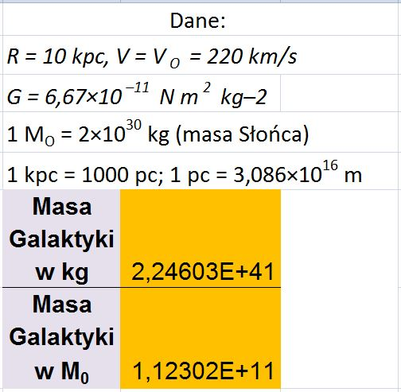
Okazuje się jednak, że nasze obserwacje różnią się od obliczeń na podstawie przyjętych danych. Prędkość materii w miejscach względnie daleko oddalonych od jądra, jest dużo wyższa niż ta która wynikała z naszych obliczeń. Bardzo dobrze ilustruje to poniższy wykres
.
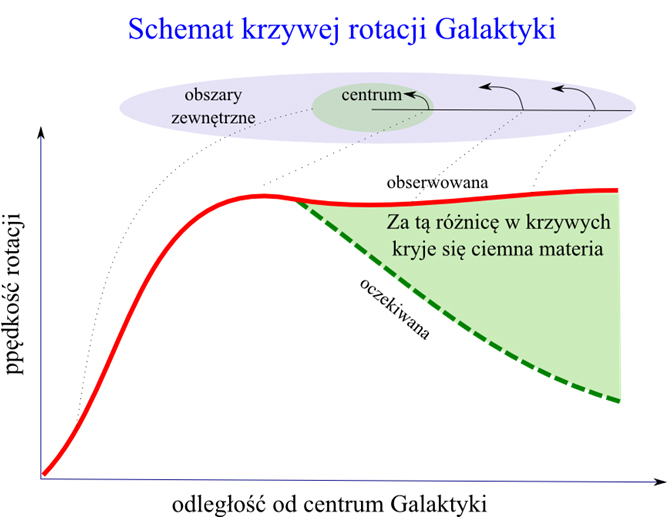
Dlaczego zewnętrzne obszary galaktyk rotują szybciej niż przewidywano?
Zgodnie ze wzorem 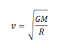większą prędkość wywołuje większa masa
Ten szybszy ruch musi wywoływać dodatkowa materia tzw. ciemna materia.Okazuje się, że ciemna materia to około 70% masy całej Galaktyki!